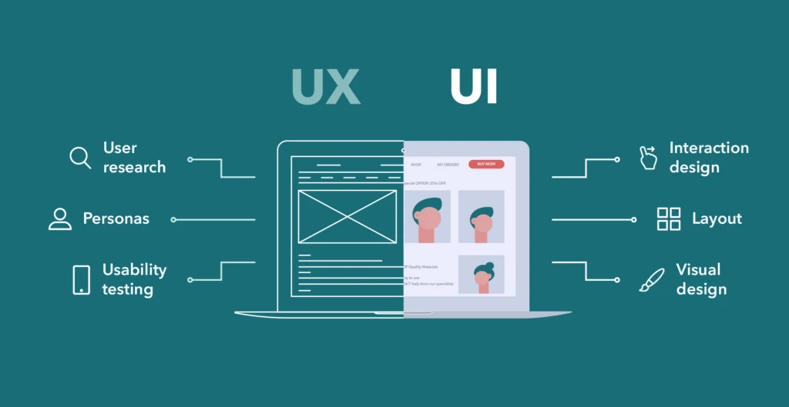
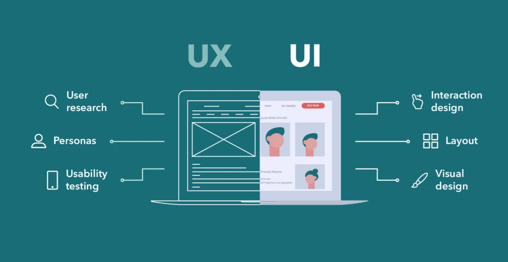

¿Qué encontrarás en este sitio?
Este sitio está dedicado a enseñarte los conceptos básicos de UX (User Experience) y UI (User Interface), dos áreas clave en el desarrollo web moderno. Aquí aprenderás qué son, en qué se diferencian, y por qué son tan importantes.
 

Explora más
Haz clic en las secciones de UX o UI para profundizar en cada área. Cada página contiene ejemplos, imágenes y listas para ayudarte a entender mejor el rol de cada una en el diseño web.